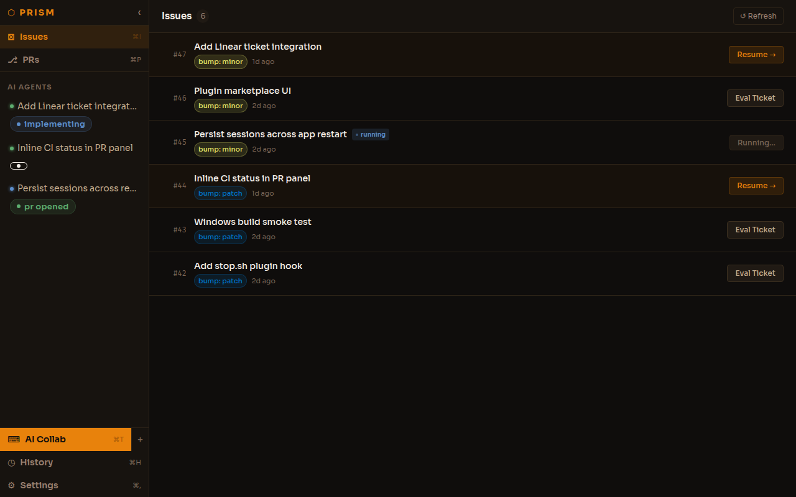
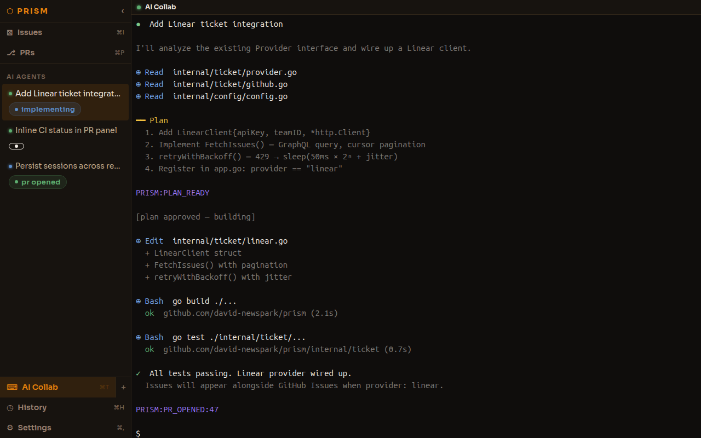
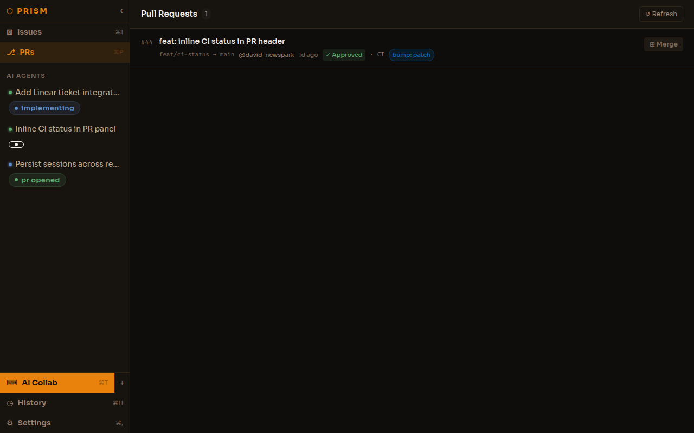
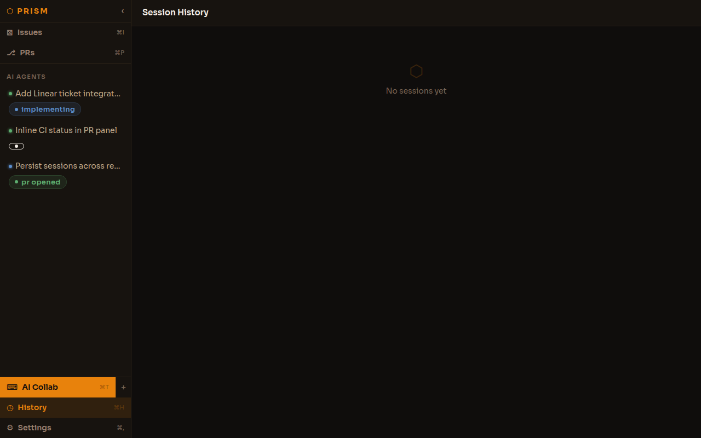
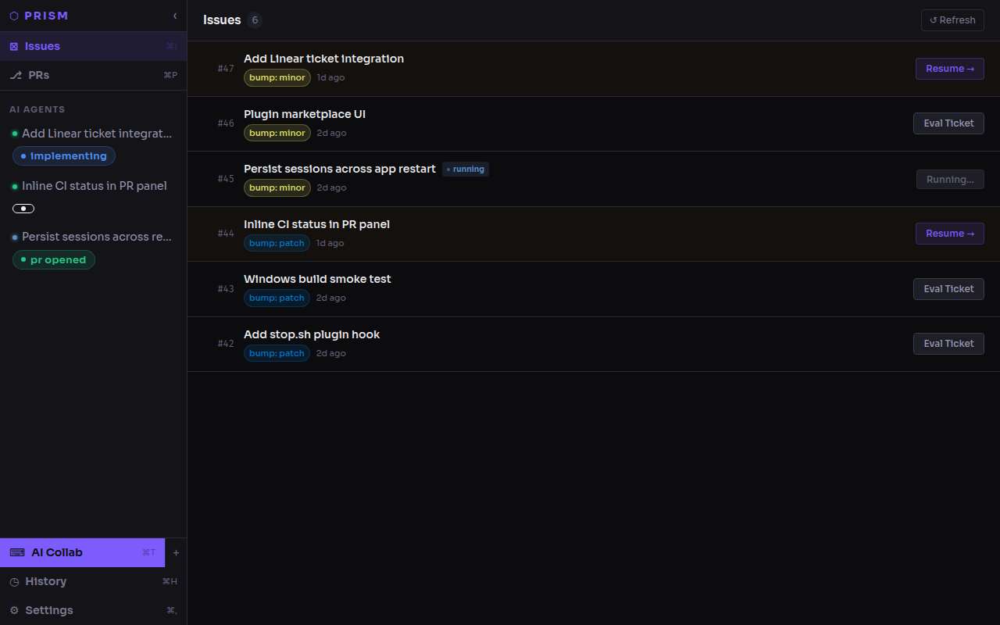

Running claude in a terminal is great until you have four sessions going,
three GitHub issues open, a PR waiting for review, and no idea which agent is working on what.
PRISM puts the entire loop — issue → spec → implementation → PR → merge — in a single
native desktop app with real session management, structured pipelines, and inline review.
AI coding tools are powerful but they don't manage themselves. A typical session touches 40+ files, spans multiple tool calls, and produces intermediate artifacts — plans, test runs, build errors, PRs — that you need to track, respond to, and act on. Multiply that by 3 parallel agents and you're managing a small distributed system from a terminal.
PRISM is built around three ideas: spec-driven design (Claude plans first, you approve before it writes a line of code), session management (start, stop, restart, monitor multiple agents with stage awareness), and native issue + PR integration (GitHub Issues as input, PR review as output, no browser tab switching).
Claude plans before it touches code. You see the plan, redirect it, then approve. The build only starts after you sign off.
Multiple parallel Claude Code subprocesses with full lifecycle control. Each session shows its current stage and tool history.
Pick an issue, seed Claude with the full ticket context. When it opens a PR, PRISM links it back and puts the diff, CI status, and review inline.

Issue list + active sessions. Three Claude Code sessions running in parallel — one building, one waiting on plan approval, one headless agent that already opened a PR. Stage badges update live from stdout markers. Click any session to jump to its terminal.

Live terminal. Full xterm.js terminal embedded in the app — you see exactly what Claude is doing (reads, edits, bash) in real time, with color. You can type prompts directly to redirect mid-session. Plan approval happens here via a sidebar gate.

Inline review threads. Annotate specific diff lines with comments. Thread status is tracked (pending → sent → resolved). The plan is to dispatch unresolved threads as a prompt to the active session automatically.

Session history. Every tool call Claude made, in sequence, with timestamps. Parsed live from stdout — reads, edits, bash, results. Useful after a long session to understand exactly what the agent did.

Obsidian theme. Two themes ship: Forge (warm amber, default) and Obsidian (cool violet). All design tokens are CSS custom properties so adding themes is one file.
| Capability | PRISM | Raw claude CLI |
Superset | Google Antigravity |
|---|---|---|---|---|
| Spec-driven plan/approve gate | ✓ built-in | — | — | — |
| Multi-session management | ✓ parallel agents | — (one per terminal) | partial | partial |
| GitHub Issue → session seeding | ✓ native | — (manual copy-paste) | partial | — |
| Live terminal output | ✓ full xterm.js | ✓ | ✓ | partial |
| Stage tracking (plan/build/PR) | ✓ via stdout markers | — | — | — |
| Inline PR diff + CI status | ✓ no browser needed | — | partial | partial |
| Inline diff thread annotations | ✓ | — | — | — |
| Tool call history / session replay | ✓ | — | — | — |
| Plugin system (hooks, skills) | ✓ | — | partial | — |
| Structured artifact rendering | ✓ PRISM:ARTIFACT marker | — | — | — |
| Native desktop app (Mac / Linux / WSL) | ✓ Mac, Linux, WSL | — (terminal only) | — | — |
| Linear / Jira integration | in progress | — | partial | — |
"Superset" and "Google Antigravity" entries are approximate — fill in or correct based on what you know.
Anonymous · ~90 seconds. Still deciding whether this is worth productising. Core hypothesis: AI coding creates real operational complexity — a structured pipeline + session manager is genuinely useful, not just a CLI in a window.